educaWCAG
Overview
Case study carried out during the Digital Project module (semester 2023.1) of the Design course at the Federal University of Santa Catarina, under the guidance of professors André Schlemmer, Cláudia Regina Batista and Luciane Maria Fadel. The educaWCAG application seeks to popularize accessibility guidelines and make them more present in digital design projects.
Team
Giovana Santos, Djulia dos Santos e Matheus May.
My roles
I participated in all phases of the project's development, from initial research to the creation of wireframes, usability testing and prototyping.
Tools


Problem
The inclusion of methods that provide accessibility, even though it is on many current agendas, is still not sufficiently implemented. This is caused by a lack of financial investment, but mainly by a lack of knowledge and study of guidelines and good practices that enable greater accessibility.
Goal
Reorganize the WCAG website into an application, in a more visual and interesting way. Aiming at greater popularization, accessibility and consumption of the guidelines, for everyday application in design projects.
Process
For the development of the project, we chose to apply the Iterato Method, presented in the article “Iterato: method for the design of interactive digital objects” (GONÇALVES; FADEL; BAPTISTA; WOLOSZYN, 2022), based on ISO 9241 - 2011, and is used in the Digital Project Module, which makes up the curriculum of the Bachelor of Design course at the Federal University of Santa Catarina (UFSC).
The method is based on human-centered design (HCD) and is organized into phases that repeat in a continuous cycle, which characterizes it as iterative. This approach allows you to return to previous stages of the process, if necessary, and improve the project through constant evaluations, aiming to achieve more accurate results.
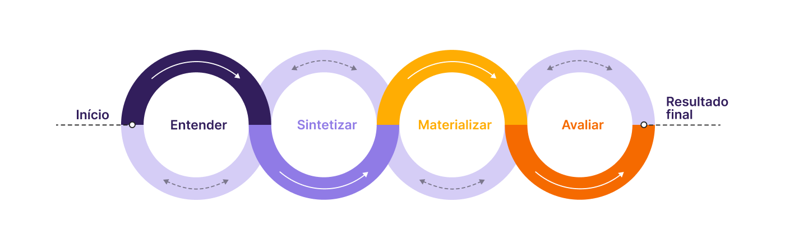User research
Interviews were conducted with two trained designers working in the field, two design students and a member of the faculty of the Design course at UFSC, with the purpose of:
- Clarify the group's doubts about the application of accessibility guidelines to web materials;
- Investigate how much the target audience knows about the subject;
- Discover the level of interest of the target audience in relation to the topic;
- Propose a new way of presenting these guidelines.
Below will be presented some collected data that we consider relevant:

Persona
After completing the interviews and analyzing the results, a persona was developed based on the data collected to represent the project's target audience.
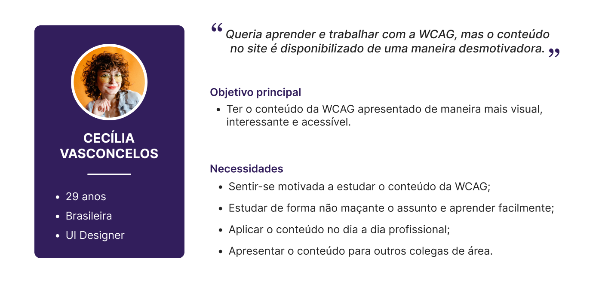User stories
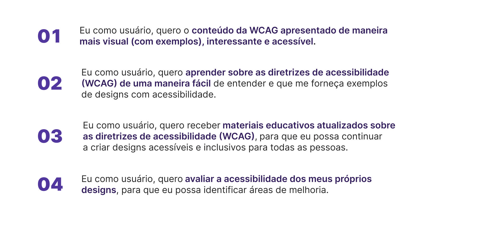Requirements frame
At this stage, the requirements that would dictate the continuation of the project were defined, bringing features and content that the application will present in the final product. Project requirements are organized into low, medium, and high priority.
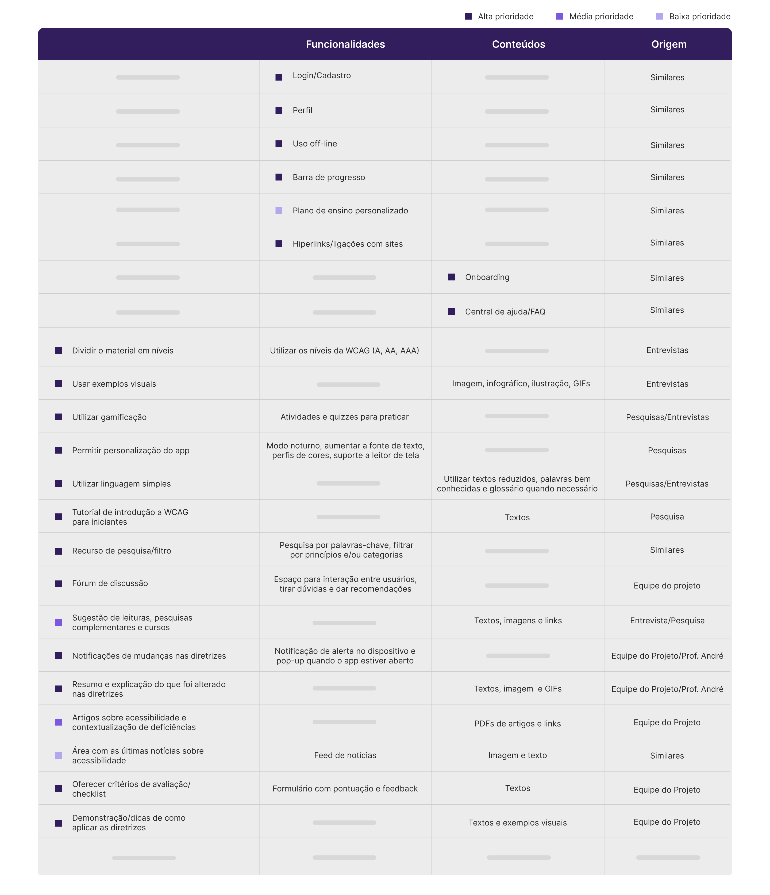Information architecture

Wireframes
To start designing the application, it was essential to create medium fidelity wireframes. This allowed us to understand the structure of the pages and determine the necessary actions, while evaluating the flow of information. Below are some screens developed during this stage:
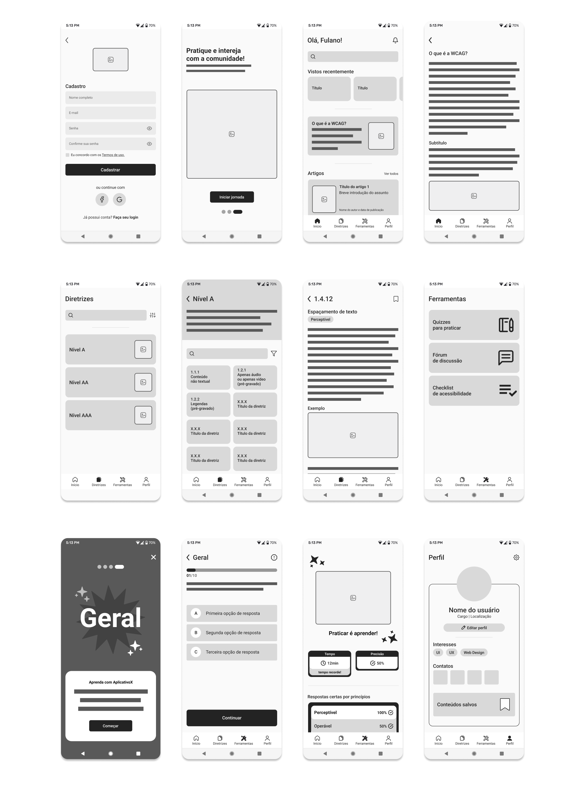Style guide
Visual identity
Technical details
For the development of the application, screen dimensions of 360px wide by 800px high were used. Furthermore, the construction grid follows Google Material Design recommendations with 4 columns (margins and gutter of 16px).
The visual and interaction elements also followed the Material guidelines, using dimensions in multiples of 8, or in specific cases, multiples of 4. Ensuring adherence to the grid and facilitating layout.
For the typography, the Type Scale Generator was used - using Inter typography -, but the project team made adjustments, not following all the dimensions indicated in the tool.
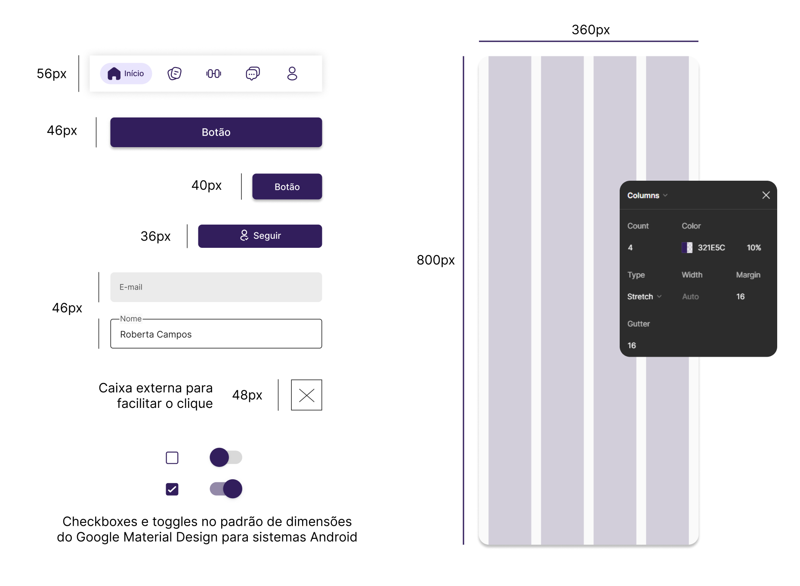Color palette
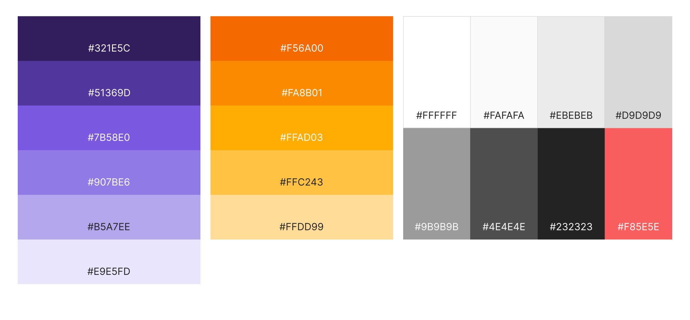Typography
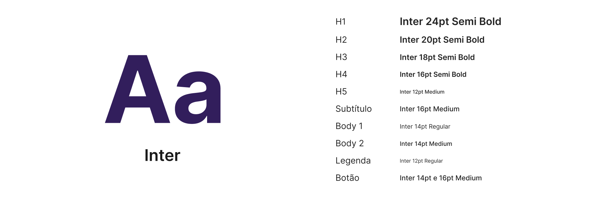Iconography

Components
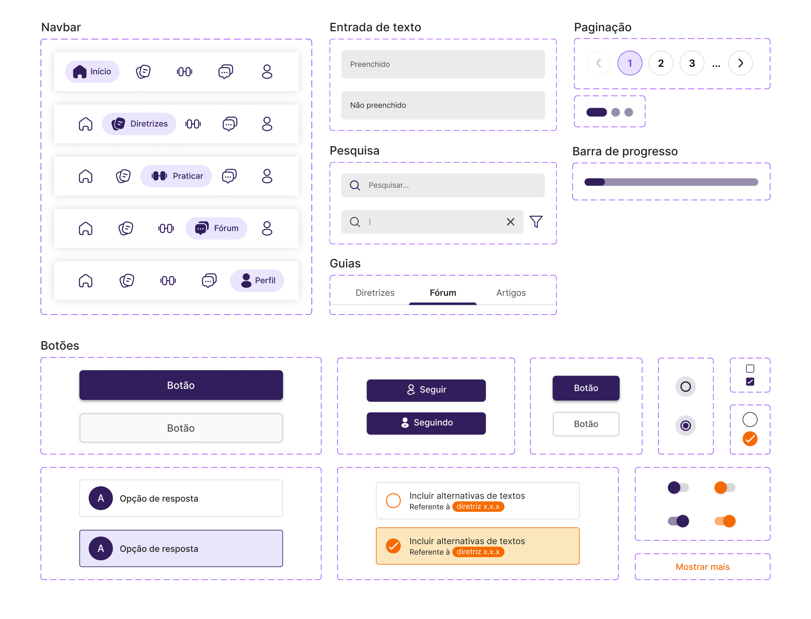Illustrations
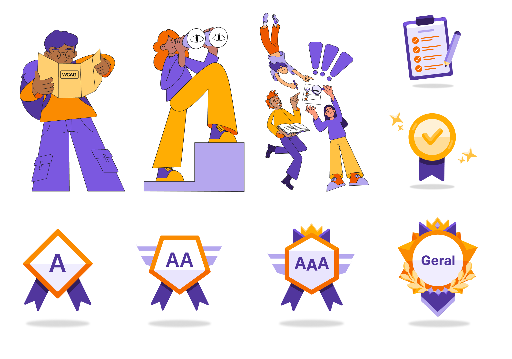Results


 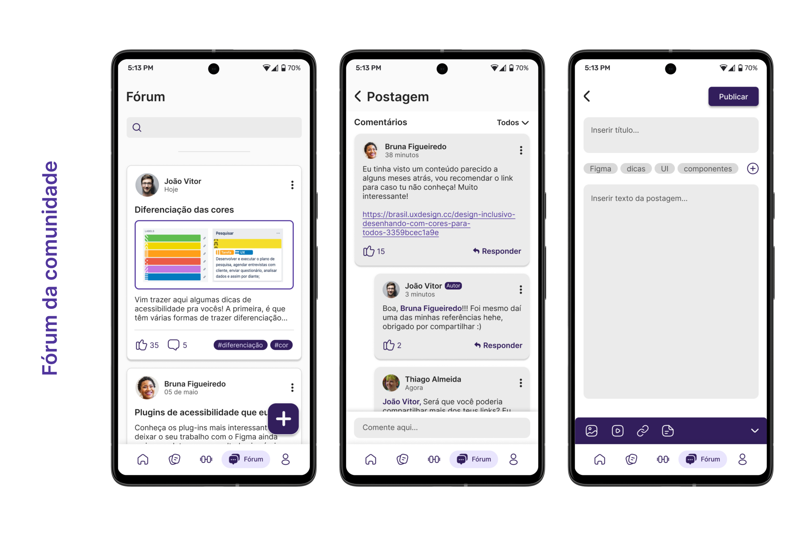
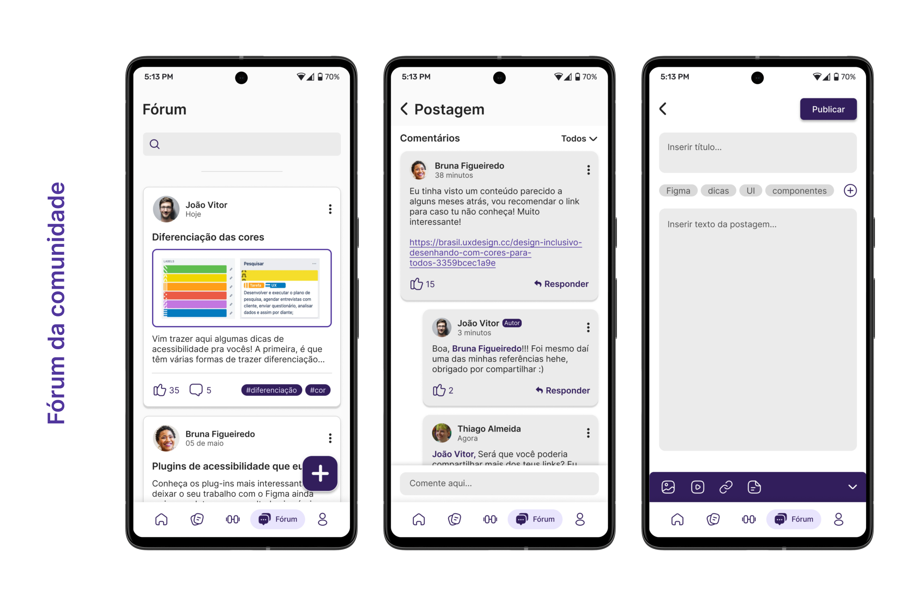
Usability test
Contextualization
The tests were carried out with 3 participants, namely:
- Design student at UFSC and UX/UI intern;
- Trained designer and UX/UI designer;
- Trained designer.
The prototypes were developed and accessed using Figma and/or Figma Mirror. All interviews were conducted online via Google Meet, with users sharing their screens.
During the test, one of the team members acted as an intermediary with the user while the other two were responsible for taking notes/recording. These functions were changed depending on the participant.
Data logging: direct observation, filming, screen recording and interview.
Support: annotations in Google Docs.
Scenario
“You are Roberta, a designer who works for a technology company. You want to start implementing accessibility concepts in your work, but your day is very busy, and you are looking for a more organized way to view WCAG content, because when you tried to go through the more traditional means (website), you felt confused and unmotivated, that’s why you downloaded this app they recommended.”
Tasks
- Register on the app and go through onboarding;
- Save the guideline “1.4.3 - Contrast (minimum)” and consult it in the saved section;
- Practice the content learned;
- Access the forum and interact;
- Use the checklist.
Results obtained

Navigable prototype
If it doesn't load, click here to open in a new browser tab.
Promotional video
After completing all phases of the project, I took responsibility for creating the promotional video for the educaWCAG application. I used Adobe After Effects to create and edit the video, ensuring a final result of quality and impact.